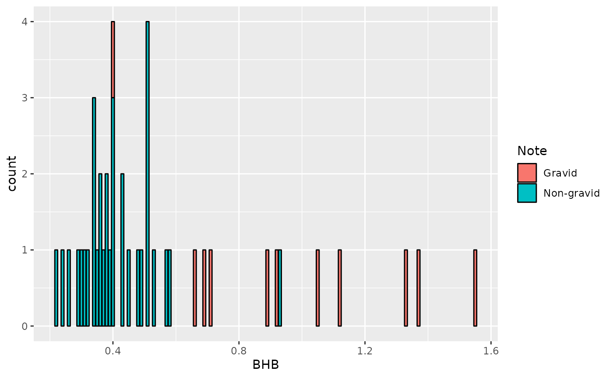
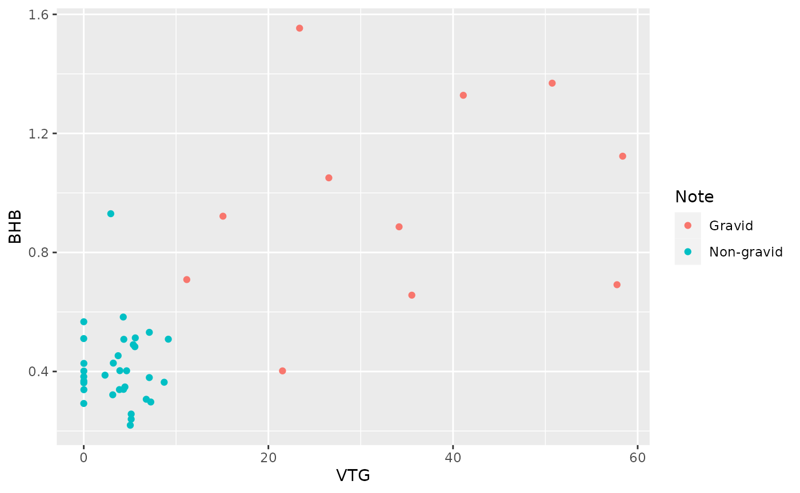

HormonesTutorial.RmdThis package is used for analyzing hormone data.
devtools::install_github("danicrc/drojas.pkg")## Using github PAT from envvar GITHUB_PAT## Skipping install of 'Rojas.pkg' from a github remote, the SHA1 (036b26fa) has not changed since last install.
## Use `force = TRUE` to force installation## ── Attaching core tidyverse packages ──────────────────────── tidyverse 2.0.0 ──
## ✔ dplyr 1.1.4 ✔ readr 2.1.4
## ✔ forcats 1.0.0 ✔ stringr 1.5.1
## ✔ ggplot2 3.4.4 ✔ tibble 3.2.1
## ✔ lubridate 1.9.3 ✔ tidyr 1.3.0
## ✔ purrr 1.0.2## ── Conflicts ────────────────────────────────────────── tidyverse_conflicts() ──
## ✖ dplyr::filter() masks stats::filter()
## ✖ dplyr::lag() masks stats::lag()
## ℹ Use the conflicted package (<http://conflicted.r-lib.org/>) to force all conflicts to become errorsIn this tutorial, we will be using the sea turtle hormone data collected from gravid and non-gravid loggerhead turtles.
#install.packages("googlesheets4")
library(googlesheets4)
googlesheets4::gs4_deauth()
Data_RojasC <- read_sheet("https://docs.google.com/spreadsheets/d/1X8VwD7pLS437uzxXK2OaZDiklGRgoYlYfCu3BsmlO5s/edit?usp=sharing")## ✔ Reading from Data_RojasC.## ✔ Range Data_RojasC.
Data_RojasC## # A tibble: 44 × 8
## ID DATE VTG E2 Testosterone BHB Follicles Note
## <chr> <dttm> <dbl> <list> <dbl> <dbl> <chr> <chr>
## 1 HA4819 2013-03-07 00:00:00 35.5 <dbl [1]> 915. 0.66 Y Grav…
## 2 HA4845 2011-03-08 00:00:00 58.4 <dbl [1]> 840. 1.12 Y Grav…
## 3 HA4872 2013-03-04 00:00:00 41.1 <dbl [1]> 1022 1.33 Y Grav…
## 4 W1827 2023-03-05 00:00:00 26.6 <dbl [1]> 1453 1.05 NA Grav…
## 5 W1833 2003-03-05 00:00:00 34.2 <dbl [1]> 3321 0.89 NA Grav…
## 6 W1847 2003-03-04 00:00:00 57.8 <dbl [1]> 1442 0.69 NA Grav…
## 7 W1899 2003-03-06 00:00:00 21.5 <dbl [1]> 279 0.4 NA Grav…
## 8 W1990 2004-03-10 00:00:00 23.4 <dbl [1]> 1892 1.55 NA Grav…
## 9 X5936 2003-03-06 00:00:00 15.1 <dbl [1]> 1918 0.92 NA Grav…
## 10 X5969 2003-03-05 00:00:00 11.2 <dbl [1]> 1813 0.71 NA Grav…
## # ℹ 34 more rowsYou can use this package to study the concentration of hormones in one organism and understand the relationship between them. For the package, I use the hormone concentration of sea turtles gravid and no-gravid. The hormone data should be organized in a Google spreadsheet, and each column should have the hormone concentration separately.
#How to use the functions in this package.
#Cleaning and organizing the data
The first function of this hormone package is a function that cleans the data by removing NAS. This function is called Remove_NA and it requires the data set and the column that you wish to clean which should be character data. You will run the function and you will need to create a variable called “columns” and include the data that you wish to clean using quotation marks. At the end to run the function you will use the variable that you created.
library(Rojas.pkg)
columns <-c("Follicles", "Note")
remove_nas(Data_RojasC, columns)## # A tibble: 44 × 8
## ID DATE VTG E2 Testosterone BHB Follicles Note
## <chr> <dttm> <dbl> <list> <dbl> <dbl> <chr> <chr>
## 1 HA4819 2013-03-07 00:00:00 35.5 <dbl [1]> 915. 0.66 Y Grav…
## 2 HA4845 2011-03-08 00:00:00 58.4 <dbl [1]> 840. 1.12 Y Grav…
## 3 HA4872 2013-03-04 00:00:00 41.1 <dbl [1]> 1022 1.33 Y Grav…
## 4 W1827 2023-03-05 00:00:00 26.6 <dbl [1]> 1453 1.05 NA Grav…
## 5 W1833 2003-03-05 00:00:00 34.2 <dbl [1]> 3321 0.89 NA Grav…
## 6 W1847 2003-03-04 00:00:00 57.8 <dbl [1]> 1442 0.69 NA Grav…
## 7 W1899 2003-03-06 00:00:00 21.5 <dbl [1]> 279 0.4 NA Grav…
## 8 W1990 2004-03-10 00:00:00 23.4 <dbl [1]> 1892 1.55 NA Grav…
## 9 X5936 2003-03-06 00:00:00 15.1 <dbl [1]> 1918 0.92 NA Grav…
## 10 X5969 2003-03-05 00:00:00 11.2 <dbl [1]> 1813 0.71 NA Grav…
## # ℹ 34 more rows#Selecting and manipulated the data
The second function is for selecting specific data columns. This function is called Select and it requires the data and the columns that you wish to select. You will run the function and you will need to create a variable called “columns” and include the data that you wish to select using quotation marks. At the end to run the function you will use the variable that you created. This function will show you the data that you select.
library(Rojas.pkg)
columns <- c("VTG", "E2", "Testosterone", "BHB")
Select_data (Data_RojasC, columns)## # A tibble: 44 × 4
## VTG E2 Testosterone BHB
## <dbl> <list> <dbl> <dbl>
## 1 35.5 <dbl [1]> 915. 0.66
## 2 58.4 <dbl [1]> 840. 1.12
## 3 41.1 <dbl [1]> 1022 1.33
## 4 26.6 <dbl [1]> 1453 1.05
## 5 34.2 <dbl [1]> 3321 0.89
## 6 57.8 <dbl [1]> 1442 0.69
## 7 21.5 <dbl [1]> 279 0.4
## 8 23.4 <dbl [1]> 1892 1.55
## 9 15.1 <dbl [1]> 1918 0.92
## 10 11.2 <dbl [1]> 1813 0.71
## # ℹ 34 more rows#Statistical Analysis with a linear model
The third function is used to make a linear model statistical analysis. This function is called Linear_model in order to work you must have numerical data in your data set. If you have character data after you run the function you will have a message “Ziggy”. Also, after running the function you should select the predictor (column_2) and the response variable (column_1). The function will show you a linear model as a result. Remember to use quotation marks.
##
## Call:
## lm(formula = Turtle_hormone, data = data)
##
## Residuals:
## Min 1Q Median 3Q Max
## -22.858 -4.965 -2.123 4.019 41.661
##
## Coefficients:
## Estimate Std. Error t value Pr(>|t|)
## (Intercept) -8.082 3.408 -2.371 0.0224 *
## BHB 35.045 5.352 6.548 6.47e-08 ***
## ---
## Signif. codes: 0 '***' 0.001 '**' 0.01 '*' 0.05 '.' 0.1 ' ' 1
##
## Residual standard error: 11.16 on 42 degrees of freedom
## Multiple R-squared: 0.5052, Adjusted R-squared: 0.4934
## F-statistic: 42.87 on 1 and 42 DF, p-value: 6.467e-08#Plotting a bar graph
The fourth function is used to plot a bar graph. This function is called Bar_plot. In order to work you should make sure that your column_1 is numeric. If you are using character data in column_1 the function with let you know by showing an error message after you run it. This function will show you a bar graph with the data that you selected.

#Ploting a graph for the visialization of the data
Function five plot a graph that allows us to compare the relationship between hormones by using gravid and non-gravid females. This function is called Plot_two. In order for the function to work two columns should be numerical and one characteristic data. the column_1 should be numerical if you include characteristic data this function will print the word “turtle”. This function will show the relationship between two hormone concentrations in gravid and non-gravid turtles.

#Filtering and compare specific data
Function six is used to filter specific data selected. This function is called Filter and it requires the data and the columns that you wish to filter. This function will show you the data that you filter in detail without including other data. Also, this function works to compare two sets of data in this case two hormone concentrations.
## # A tibble: 44 × 2
## VTG E2
## <dbl> <list>
## 1 35.5 <dbl [1]>
## 2 58.4 <dbl [1]>
## 3 41.1 <dbl [1]>
## 4 26.6 <dbl [1]>
## 5 34.2 <dbl [1]>
## 6 57.8 <dbl [1]>
## 7 21.5 <dbl [1]>
## 8 23.4 <dbl [1]>
## 9 15.1 <dbl [1]>
## 10 11.2 <dbl [1]>
## # ℹ 34 more rows